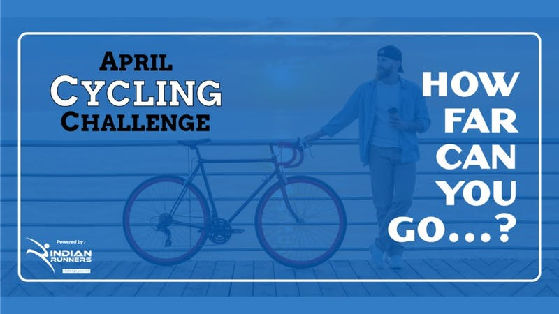

EVENT INFORMATION
Merida Super Challenger 2021
Indian Cyclothon Distance Challenge 2021
Virtual Challenge - Ride Anywhere & Ride Anytime
Minimum target 100 Kms in a month, no daily limit
Register for the challenge
Ride & Record your Activity in any tracking application
Submit on www.indianrunners.in
Check Leaderboard regularly for your performance
Train yourself to be better, be smarter & to be regular.
WIN Merida Cycles: Become a Super Challenger & be a Lucky Winner
REWARDS FOR PRIME
Merida bicycles to win in Lucky Draw for Super Challengers 2021
Earn Reward Points and Fast & Up Gift Vouchers
Challenger Medal + Finisher e-certificate + Finisher Badge
Garmin Super Challenger 2021 Qualification
REWARDS FOR ADVANCE
Finisher e-certificate
Earn Reward Points
Important Notes:
Go to www.indianrunners.in > Login > My Account > Connect with Strava > Follow the on screen instruction.
All other apps: Submit data manually in IR Passport.
Go to www.indianrunners.in > Login > My Account > Submit Activity > Fill in the details > Save Data
Check the timeline of the event on www.indianrunners.
to know the process Check FAQ @ www.indianrunners.in/faq
Email & Mobile number in Registration must match with your IR Account, else the challenge will not be assigned.
Click here to Join Facebook Group to connect with other Challengers and for a Daily Dose of Motivation
Super Challenger: Be the super challenger by qualifying for any 6 monthly cycling challenges in 2021.
Super-Duper Challenger: Be the Super Duper Challenger by qualifying all 12 monthly cycling challenges in 2021.
#bebiker
#indianrunners
#indiancyclothon
#RunforIndianArmy
Take Resolution to be Fit & Active round the year!
Keep Running Keep Inspiring
Registration is non-refundable and non-transferable under any circumstances.
This is a self-supported Sports challenge and you are responsible to take care of your safety and health